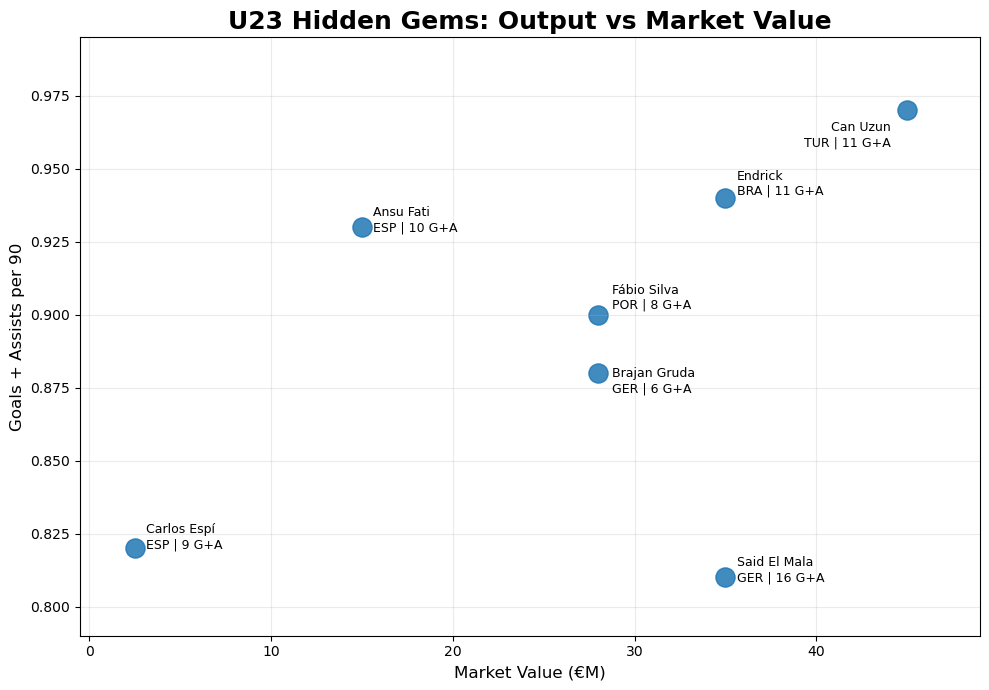

The project
Football was an interest long before it became a dataset for me. TikiData FC gives that interest a research outlet: take a question about the game, analyze the available data, and communicate the result visually.
The repository organizes each analysis in its own folder. Topics include goals versus expected goals, player form, under-23 players, and contrasting team performances. The notebooks make it possible to look beyond the final graphic and inspect the work behind it.
- My role
- Football analysis and visual storytelling
- Tools
- Python, Pandas, and Matplotlib
- Output
- Published charts, notebooks, and Instagram visuals
Start with a football question
Goals versus xG
Compare scoring output with expected goals to identify players above or below the chances represented by the dataset.
Young-player profiles
Explore under-23 players by attacking output per 90 minutes and market value, then label the visual so readers can inspect the players.
Form and team comparisons
Separate analysis folders cover attacker form, Lamine Yamal, and a comparison involving Arsenal, Atlético, PSG, and Bayern.
How it works
Each folder keeps a question, its analysis notebook, and its visual outputs together. The aim is to make the final chart easy to read and the underlying process easy to revisit.
Ask a question
Define the comparison: a player’s scoring gap, recent form, or an under-23 performance pattern.
Analyze the data
Use notebooks and tabular analysis to compare the relevant measures and organize the results.
Explain visually
Publish labeled plots and social visuals, while keeping the analysis available in the repository.
The figures on this page are saved outputs from the public repository. Their player values and seasons belong to those published analyses.
A key decision
Keep the notebook behind the graphic.
A football chart should invite a closer look. Labels, units, and the comparison itself need to be clear enough that a reader can understand what a point or bar represents.
Keeping analyses in separate folders connects the visual result to the notebook. Visitors can see the finished story, then inspect the calculations and choices that produced it.
In action

Explore further
Follow the work into the code, analysis, and documentation.
- All analysesBrowse individual project folders, notebooks, and graphics.
- Goals versus expected goalsThe analysis notebook and its published player comparisons.
- Under-23 playersThe notebook and figures behind the hidden-gems analysis.
- TikiData on InstagramThe project’s published social visuals.
Project topics and original figures come from the public TikiData FC repository. Figures are historical outputs, not current player statistics.